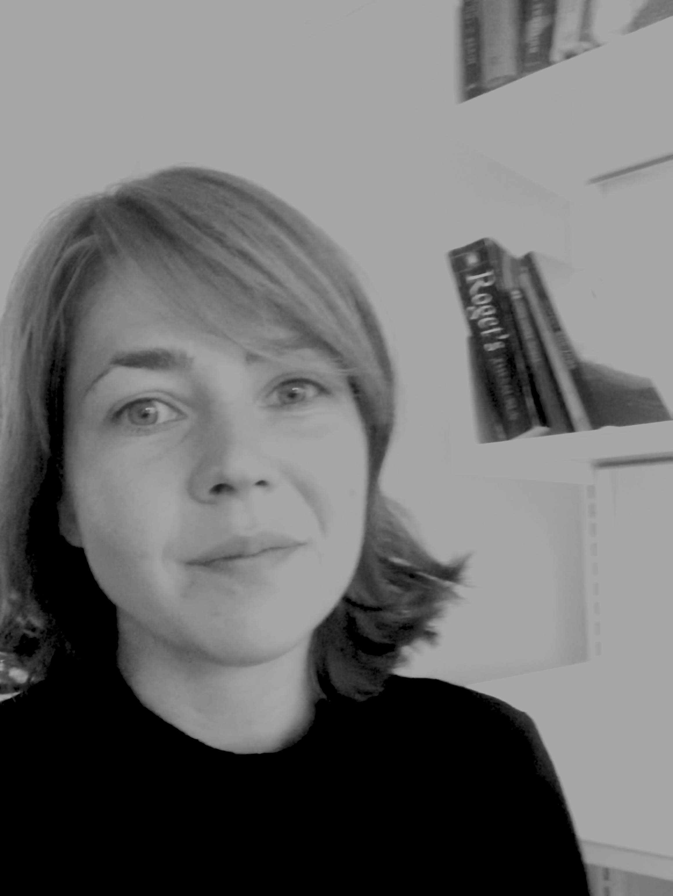

This is me
I am a literary researcher, trained in qualitative and quantitative methods. My main areas of interest are stylistics, literary multi- and translingualism and creativity. Currently at Aarhus University working on the Fabula-NET project.
